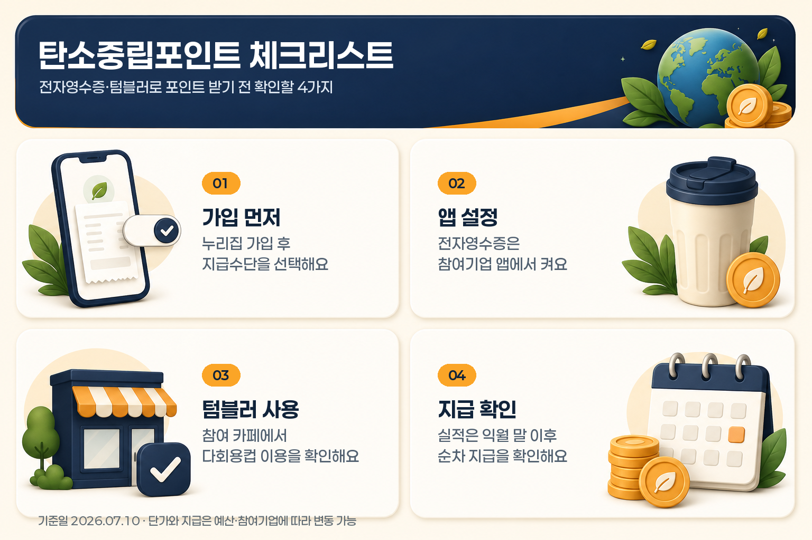

전자영수증·텀블러로 포인트 받는 법: 탄소중립포인트 체크리스트
카페에서 텀블러를 쓰고, 마트나 편의점 앱에서 전자영수증을 켜 두면 탄소중립포인트를 받을 수 있습니다. 다만 그냥 텀블러만 들고 가거나 종이영수증을 안 받는다고 자동으로 적립되는 구조는 아닙니다. 먼저 탄소중립포인트 녹색생활실천에 가입하고, 참여기업별 설정을 맞춰야 실적으로 잡힙니다.
2026년 7월 10일 공식 안내 기준으로 녹색생활실천 분야는 연간 최대 7만원까지 인센티브가 안내됩니다. 전자영수증은 10원/건, 텀블러·다회용컵은 300원/개입니다. 예전 글에서 전자영수증 100원이라고 본 적이 있다면, 2026년 단가 조정 이후 숫자가 달라졌다는 점을 먼저 확인해야 합니다.
기준일: 2026년 7월 10일
먼저 결론부터 정리하면
| 확인할 것 | 핵심 내용 |
|---|---|
| 가입 | 탄소중립포인트 녹색생활실천 누리집에서 회원가입을 먼저 합니다. |
| 지급수단 | 현금 계좌 또는 신용카드사 포인트 등 지급 방법을 선택합니다. |
| 전자영수증 | 제도 참여기업 앱에서 스마트 영수증 등 전자영수증 발급 설정을 켭니다. |
| 텀블러·다회용컵 | 참여 커피전문점 등에서 일회용컵 대신 텀블러·다회용컵을 이용합니다. |
| 단가 | 전자영수증 10원/건, 텀블러·다회용컵 300원/개로 안내됩니다. |
| 지급 확인 | 실적은 실시간 조회가 아니라 보통 다음 달 말 이후 확인됩니다. |
| 주의 | 단가와 지급 여부는 참여실적, 참여기업, 예산집행 상황에 따라 달라질 수 있습니다. |

이 글은 탄소중립포인트를 처음 보는 독자가 “어디서 가입하고, 무엇을 설정해야 하며, 언제 확인해야 하는지”를 놓치지 않도록 정리한 체크리스트입니다.
1. 탄소중립포인트 녹색생활실천은 무엇인가요?
탄소중립포인트는 에너지, 자동차, 녹색생활실천처럼 분야가 나뉩니다. 이 글에서 다루는 것은 전기요금 절약형 에너지 분야나 자동차 주행거리 감축 분야가 아니라, 전자영수증·텀블러·리필스테이션·다회용기·친환경제품 구매 같은 생활 실천형 분야입니다.
공식 통합 안내는 녹색생활실천을 “전자영수증, 리필스테이션, 다회용컵 등 일상 속 녹색 행동을 실천하고 포인트를 받는” 분야로 설명합니다. 그래서 독자 입장에서는 복잡한 제도명보다 이렇게 이해하면 쉽습니다.
| 생활 장면 | 탄소중립포인트로 볼 수 있는 행동 |
|---|---|
| 마트·편의점·백화점 | 종이영수증 대신 전자영수증 설정 |
| 카페 | 일회용컵 대신 텀블러·다회용컵 이용 |
| 배달·포장 | 다회용기 또는 개인용기 이용 가능 여부 확인 |
| 장보기 | 친환경제품, 장바구니, 재생원료 사용제품 등 참여 항목 확인 |
| 정리·재활용 | 폐휴대폰 반납, 고품질 재활용품 배출 등 |
핵심은 “내가 평소 하던 행동이 참여기업과 연결되어 있는가”입니다. 같은 전자영수증이라도 참여기업이 아니거나 앱 설정이 맞지 않으면 실적으로 인정되지 않을 수 있습니다.
2. 가입 후 바로 해야 할 설정
참여 절차는 크게 다섯 단계입니다. 공식 참여방법은 회원가입, 실천항목별 참여방법 확인, 녹색생활 실천활동, 포인트 적립, 인센티브 수령 순서로 안내됩니다.
처음 가입했다면 아래 순서로 보는 것이 가장 덜 헷갈립니다.
- 탄소중립포인트 녹색생활실천 누리집에 가입합니다.
- 인센티브를 받을 지급 방법을 선택합니다.
- 자주 가는 매장이나 앱이 참여기업인지 확인합니다.
- 참여기업 앱에서 전자영수증, 스마트영수증, 모바일영수증 같은 설정을 켭니다.
- 텀블러·다회용컵은 참여 매장과 적립 방식이 맞는지 확인합니다.
- 실천 후 다음 달 말 이후 실적 조회와 지급 내역을 확인합니다.
여기서 가장 중요한 단계는 3번과 4번입니다. 탄소중립포인트 누리집에 가입만 해두고, 정작 편의점·마트·카페 앱에서 전자영수증 설정을 하지 않으면 실적이 자동으로 잡히지 않을 수 있습니다.
3. 전자영수증은 “앱 설정”이 핵심입니다
전자영수증은 종이영수증 대신 모바일 영수증이나 스마트 영수증을 받는 실천 항목입니다. 2026년 7월 기준 공식 인센티브 안내에는 전자영수증 발급 단가가 10원/건으로 표시되어 있습니다.
금액만 보면 작습니다. 그래서 전자영수증은 “큰돈을 받는 혜택”이라기보다, 어차피 자주 가는 매장에서 설정해 두면 잊고 지나가던 실적이 쌓이는 항목에 가깝습니다.
| 체크할 것 | 왜 중요한가요 |
|---|---|
| 참여기업 여부 | 모든 매장·앱이 자동 적립 대상은 아닙니다. |
| 전자영수증 설정 | 제도 참여기업 앱에서 스마트 영수증 등 발급 설정을 해야 합니다. |
| 회원·멤버십 연동 | 매장별로 앱 로그인, 멤버십 바코드, 결제 방식 조건이 다를 수 있습니다. |
| 실물영수증 출력 여부 | 일부 경우 실물영수증이 출력되면 실적으로 인정되지 않을 수 있습니다. |
공식 FAQ에는 롯데마트, 홈플러스 등에서 전자영수증을 설정했는데도 적립이 안 되는 사례가 설명되어 있습니다. 요지는 단순합니다. 앱 설정만이 아니라 매장 결제 과정에서 어떤 바코드로 적립했는지, 현금영수증이나 할부 거래처럼 별도 조건이 있는지에 따라 실적 인정이 달라질 수 있습니다.
따라서 전자영수증은 처음 한두 번은 실제 앱 영수증이 어떻게 발급되는지 확인하는 편이 좋습니다.
4. 텀블러·다회용컵은 300원/개로 안내됩니다
카페를 자주 간다면 체감이 더 쉬운 항목은 텀블러·다회용컵입니다. 공식 인센티브 안내 기준 단가는 300원/개입니다. 다만 여기서도 “아무 카페에서 텀블러 쓰면 자동 적립”이라고 이해하면 곤란합니다.
공식 참여기업 안내에서 텀블러·다회용컵 이용 항목을 보면 메가MGC커피, 폴 바셋 등 참여기업이 별도 표시됩니다. 참여기업은 추가·삭제될 수 있으므로, 자주 가는 카페가 실제 참여 대상인지 누리집에서 확인하는 것이 안전합니다.
| 상황 | 확인할 점 |
|---|---|
| 개인 텀블러를 가져간 경우 | 해당 매장이 탄소중립포인트 참여기업인지 확인합니다. |
| 다회용컵 서비스를 이용한 경우 | 앱 또는 매장별 반납·인증 방식이 있는지 확인합니다. |
| 카페 자체 할인도 있는 경우 | 카페 할인과 탄소중립포인트 적립은 별도 조건일 수 있습니다. |
| 적립이 안 보이는 경우 | 실시간 조회가 아니므로 다음 달 말 이후 확인합니다. |
텀블러 항목은 전자영수증보다 단가가 크지만, 참여기업과 이용 방식이 맞아야 합니다. 특히 카페 자체 텀블러 할인은 받을 수 있어도 탄소중립포인트 실적은 별도 기준일 수 있으니 두 혜택을 같은 것으로 보면 안 됩니다.
5. 얼마나 받을 수 있나요?
공식 인센티브 안내는 녹색생활 실천활동별 단가와 연간 상한을 제시합니다. 상한액은 연 7만원으로 안내됩니다. 다만 전체 상한 안에서 어떤 항목으로 얼마나 쌓을지는 생활패턴과 참여기업 이용 여부에 따라 달라집니다.
| 항목 | 공식 안내 단가 |
|---|---|
| 전자영수증 발급 | 10원/건 |
| 텀블러·다회용컵 이용 | 300원/개 |
| 일회용컵 반환 | 100원/개 |
| 리필스테이션 이용 | 500원/회 |
| 다회용기 이용 | 500원/회 |
| 친환경제품 구매 | 500원/건 |
| 고품질 재활용품 배출 | 300원/kg |
| 폐휴대폰 반납 | 1,000원/개 |
| 공유자전거 이용 | 100원/km |
| 장바구니 이용 | 50원/회 |
| 개인용기 식품 포장 | 500원/회 |
여기서 전자영수증만으로 큰 금액을 기대하기는 어렵습니다. 예를 들어 전자영수증은 100건을 모아도 1,000원입니다. 반면 카페 텀블러 이용은 10회면 3,000원입니다. 그래서 생활 루틴으로 보면 전자영수증은 “기본 설정”, 텀블러·다회용컵은 “자주 쓰면 체감되는 항목”으로 나누는 편이 현실적입니다.
6. 실적은 바로 보이지 않을 수 있습니다
탄소중립포인트는 실천 즉시 화면에 바로 쌓이는 포인트앱처럼 생각하면 헷갈립니다. 공식 FAQ는 포인트 실천 후 적립되는 탄소중립포인트가 실시간 조회되는 것은 아니며, 실천 이행 후 다음 달 말 이후 조회 가능하다고 설명합니다.
또 인센티브 지급은 금월 실천활동 내역을 기준으로, 가입 시 선택한 지급 방법에 따라 익월 말부터 익익월 초까지 순차적으로 정산·지급되는 흐름으로 안내됩니다.
| 궁금한 점 | 공식 안내 기준 해석 |
|---|---|
| 영수증마다 바로 보이나요? | 실시간 조회가 아니라 다음 달 말 이후 확인하는 구조입니다. |
| 증빙을 따로 내야 하나요? | 일반적으로 참여기업 연계 또는 실적 데이터 제공으로 처리됩니다. |
| 현금으로 받을 수 있나요? | 가입 시 선택한 현금 계좌 또는 신용카드사 포인트 방식으로 안내됩니다. |
| 누락되면 어떻게 하나요? | 누락 실적은 공지·FAQ의 접수 조건과 기한을 확인해야 합니다. |
즉 “오늘 텀블러를 썼는데 왜 바로 안 보이지?”라고 판단하기보다, 다음 달 정산 시점에 확인하는 것이 맞습니다.
7. 예산과 단가 변동은 꼭 확인해야 합니다
탄소중립포인트는 상시로 관심을 둘 만한 제도지만, 모든 조건이 영구 고정이라고 보면 안 됩니다. 공식 인센티브 안내에도 세부 내용은 대상별 참여실적, 예산집행 상황 등에 따라 변동될 수 있다고 되어 있습니다.
실제로 2025년에는 인센티브 예산 조기 소진으로 7월분까지의 활동 실적만 지급 대상에 포함되고, 8월부터 12월 실적은 포인트가 지급되지 않는다는 공지가 있었습니다. 이후 2026년 1월 실적부터 적립이 재개된다는 안내도 함께 올라왔습니다.
정책브리핑 보도자료에서도 2026년 제도 개선 방향이 설명되었고, 전자영수증 단가는 기존 100원에서 10원으로 낮아지는 등 항목별 단가 조정이 예고되었습니다. 그래서 블로그 글이나 카드뉴스에서 본 숫자가 현재 공식 누리집 숫자와 다르면, 공식 인센티브 안내를 우선해야 합니다.
오늘 바로 해볼 체크리스트
- 탄소중립포인트 녹색생활실천 누리집에 가입했습니다.
- 인센티브 지급 방법을 현금 계좌 또는 카드사 포인트 중 선택했습니다.
- 자주 가는 마트·편의점·카페가 참여기업인지 확인했습니다.
- 전자영수증은 참여기업 앱에서 스마트 영수증 설정을 켰습니다.
- 텀블러·다회용컵은 참여 매장과 이용 방식이 맞는지 확인했습니다.
- 실적이 바로 안 보여도 다음 달 말 이후 조회되는 구조라는 점을 확인했습니다.
- 단가와 지급 가능 여부는 예산·참여기업 변경에 따라 달라질 수 있음을 확인했습니다.
자주 묻는 질문
전자영수증만 켜면 무조건 적립되나요?
그렇게 단정하기 어렵습니다. 탄소중립포인트 누리집 가입, 참여기업 앱의 전자영수증 설정, 매장별 멤버십·결제 방식 조건이 맞아야 실적으로 인정될 수 있습니다.
전자영수증은 지금도 100원인가요?
2026년 7월 10일 공식 인센티브 안내 기준으로는 10원/건입니다. 예전 자료나 일부 지자체 안내에는 이전 단가가 남아 있을 수 있으므로 최신 공식 누리집 기준으로 확인하는 것이 안전합니다.
텀블러는 어느 카페에서나 적립되나요?
아닙니다. 공식 참여기업 안내에서 텀블러·다회용컵 이용 항목에 표시되는 참여기업과 이용 방식을 확인해야 합니다. 카페 자체 텀블러 할인과 탄소중립포인트 적립 조건은 다를 수 있습니다.
포인트는 언제 들어오나요?
공식 FAQ는 실천 후 실시간 조회가 아니라 다음 달 말 이후 조회 가능하다고 안내합니다. 지급도 익월 말부터 익익월 초까지 순차 정산되는 흐름입니다.
증빙 사진이나 영수증을 따로 제출해야 하나요?
일반적으로 별도 증빙 제출이 아니라 참여기업으로부터 정보를 자동 연계받거나 실적 데이터를 제공받는 구조로 안내됩니다. 다만 누락 실적 접수는 별도 공지의 조건과 기한을 확인해야 합니다.
연 7만원을 꼭 받을 수 있나요?
연 7만원은 상한 안내에 가깝습니다. 실제 지급액은 내가 어떤 항목을 얼마나 실천했는지, 참여기업 실적이 정상 연계되는지, 예산집행 상황이 어떤지에 따라 달라질 수 있습니다.
마무리 정리
탄소중립포인트 녹색생활실천은 거창한 절약법이라기보다, 이미 하는 소비 습관을 조금 바꿔 포인트로 연결하는 제도입니다. 전자영수증은 단가가 작지만 한 번 설정해 두면 관리가 쉽고, 텀블러·다회용컵은 카페를 자주 이용하는 사람에게 더 체감될 수 있습니다.
다만 핵심은 “가입만 하면 끝”이 아닙니다. 참여기업 확인, 앱 설정, 실적 조회 시점, 예산 변동 가능성을 같이 봐야 합니다. 오늘 할 일은 단순합니다. 자주 쓰는 마트·편의점·카페 앱부터 열어 전자영수증 설정과 참여기업 여부를 확인해 보세요.
자료 기준일: 2026년 7월 10일 출처: 탄소중립포인트 통합 안내, 탄소중립포인트 녹색생활실천 인센티브 안내, 참여방법, 참여기업 안내, FAQ, 정책브리핑 2025년 12월 10일 보도자료 안내: 이 글은 공개 공식 자료를 바탕으로 한 일반 정보 정리입니다. 실제 포인트 적립 여부, 단가, 참여기업, 지급 시기, 예산 상황은 신청·실천 시점의 탄소중립포인트 공식 누리집과 참여기업 안내를 기준으로 확인해야 합니다.